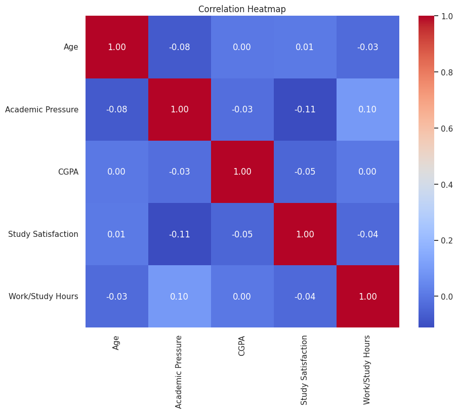

Student Depression Dataset: Exploration & Preprocessing
Comprehensive overview, EDA visualizations, and preprocessing steps to prepare the data for modeling
About Dataset
Student Depression Dataset: Analyzing Mental Health Trends and Predictors Among Students [View on Kaggle]
Overview
This dataset compiles a wide range of information aimed at understanding, analyzing, and predicting depression levels among students. It is designed for research in psychology, data science, and education, providing insights into factors that contribute to student mental health challenges and aiding in the design of early intervention strategies.
Data Description
Format:
CSV (each row represents an individual student)
Features:
- ID: Unique identifier for each student
- Demographics: Age, Gender, City
- Academic Indicators: CGPA, Academic Pressure, Study Satisfaction
- Lifestyle & Wellbeing: Sleep Duration, Dietary Habits, Work Pressure, Job Satisfaction, Work/Study Hours
- Additional Factors: Profession, Degree, Financial Stress, Family History of Mental Illness, and whether the student has ever had suicidal thoughts
Target Variable:
- Depression_Status: A binary indicator (0/1 or Yes/No) that denotes whether a student is experiencing depression
Key Highlights
- Multifaceted Data: Integrates demographic, academic, and lifestyle factors to offer a comprehensive view of student wellbeing.
- Ethical Considerations: Data collection adhered to strict ethical standards with an emphasis on privacy, informed consent, and anonymization.
- Research & Practical Applications: Ideal for developing predictive models, conducting statistical analyses, and informing mental health intervention strategies in educational environments.
Usage & Potential Applications
- Academic Research: Explore correlations between academic pressures and mental health trends.
- Data Science Projects: Build predictive models to identify at-risk students based on various indicators.
- Policy Making: Inform the development of targeted mental health support programs within academic institutions.
Ethical Note
Due to the sensitive nature of the data, please ensure that any analysis or published results respect privacy and ethical guidelines. Users of this dataset should be mindful of the ethical implications when interpreting and sharing insights.
Dataset Samples
| id | Gender | Age | City | Profession | Academic Pressure | Work Pressure | CGPA | Study Satisfaction | Job Satisfaction | Sleep Duration | Dietary Habits | Degree | Have you ever had suicidal thoughts? | Work/Study Hours | Financial Stress | Family History of Mental Illness | Depression | |
|---|---|---|---|---|---|---|---|---|---|---|---|---|---|---|---|---|---|---|
| 0 | 2 | Male | 33.0 | Visakhapatnam | Student | 5.0 | 0.0 | 8.97 | 2.0 | 0.0 | 5-6 hours | Healthy | B.Pharm | Yes | 3.0 | 1.0 | No | 1 |
| 1 | 8 | Female | 24.0 | Bangalore | Student | 2.0 | 0.0 | 5.90 | 5.0 | 0.0 | 5-6 hours | Moderate | BSc | No | 3.0 | 2.0 | Yes | 0 |
| 2 | 26 | Male | 31.0 | Srinagar | Student | 3.0 | 0.0 | 7.03 | 5.0 | 0.0 | Less than 5 hours | Healthy | BA | No | 9.0 | 1.0 | Yes | 0 |
| 3 | 30 | Female | 28.0 | Varanasi | Student | 3.0 | 0.0 | 5.59 | 2.0 | 0.0 | 7-8 hours | Moderate | BCA | Yes | 4.0 | 5.0 | Yes | 1 |
| 4 | 32 | Female | 25.0 | Jaipur | Student | 4.0 | 0.0 | 8.13 | 3.0 | 0.0 | 5-6 hours | Moderate | M.Tech | Yes | 1.0 | 1.0 | No | 0 |
| 27686 | 140685 | Female | 27.0 | Surat | Student | 5.0 | 0.0 | 5.75 | 5.0 | 0.0 | 5-6 hours | Unhealthy | Class 12 | Yes | 7.0 | 1.0 | Yes | 0 |
| 27687 | 140686 | Male | 27.0 | Ludhiana | Student | 2.0 | 0.0 | 9.40 | 3.0 | 0.0 | Less than 5 hours | Healthy | MSc | No | 0.0 | 3.0 | Yes | 0 |
| 27688 | 140689 | Male | 31.0 | Faridabad | Student | 3.0 | 0.0 | 6.61 | 4.0 | 0.0 | 5-6 hours | Unhealthy | M.Tech | No | 5.0 | 2.0 | No | 0 |
| 27689 | 140690 | Female | 18.0 | Ludhiana | Student | 5.0 | 0.0 | 6.88 | 2.0 | 0.0 | Less than 5 hours | Healthy | Class 12 | Yes | 10.0 | 5.0 | No | 1 |
| 27690 | 140699 | Male | 27.0 | Patna | Student | 4.0 | 0.0 | 9.24 | 1.0 | 0.0 | Less than 5 hours | Healthy | BCA | Yes | 2.0 | 3.0 | Yes | 1 |
Note: Showing the first 5 and last 5 samples from the dataset (total rows: 27,901).
EDA
Data Preprocessing Before EDA
-
Data type conversion: Categorical columns
such as Gender, City, Profession, Dietary Habits, Degree,
etc. were converted to
categorytype to optimize memory and processing. - Value normalization: The Sleep Duration column was mapped from text values to numbers (e.g., 'Less than 5 hours' → 1, '5-6 hours' → 2, ...).
- Missing value check: The dataset contains no missing values, so no imputation or row removal was needed.
- Duplicate row check: No duplicate rows were found in the dataset.
Boxplot of Numerical Features
- id: 0 outliers (n < -71129.50 or n > 211986.50)
- Age: 12 outliers (n < 7.50 or n > 43.50)
- Academic Pressure: 0 outliers (n < -1.00 or n > 7.00)
- Work Pressure: 3 outliers (n < 0.00 or n > 0.00)
- CGPA: 9 outliers (n < 2.35 or n > 12.87)
- Study Satisfaction: 0 outliers (n < -1.00 or n > 7.00)
- Job Satisfaction: 8 outliers (n < 0.00 or n > 0.00)
- Work/Study Hours: 0 outliers (n < -5.00 or n > 19.00)
- Depression: 0 outliers (n < -1.50 or n > 2.50)
Total of 32 outliers detected across 9 numeric columns.
The boxplot visualizes the distribution and outliers of numerical features in the dataset. Outliers are present in features such as Age, CGPA, Work Pressure, and Job Satisfaction, indicating the existence of abnormal values. We remove rows containing these outlier values to improve data quality for modeling.
Handling Noisy Values in Categorical Features
- Detection of noisy values: Some categorical features such as Sleep Duration, Dietary Habits, and Financial Stress contained invalid or rare values (Sleep Duration = 5, Dietary Habits = 'Others', Financial Stress = '?').
- Action taken: Rows containing these values were removed from the dataset to ensure the quality of analysis and modeling.
-
Details:
- Sleep Duration: Removed rows with value = 5 (very rare, only 18 rows).
- Dietary Habits: Removed rows with value = 'Others' (only 12 rows).
- Financial Stress: Removed rows with value = '?' (only 3 rows).
Removing these noisy values increases the reliability of subsequent analyses and ensures that the input data for prediction models is valid.
Distribution of Depression among Students

– After removing noisy and outlier rows, the dataset contains
27,845 samples.
The distribution of the target variable is as follows:
Class 1 (Depressed): 16,311 samples
(58.6%)
Class 0 (Not Depressed): 11,534 samples
(41.4%)
– This indicates a moderate class imbalance, with a higher
proportion of students experiencing depression.
Depression Distribution by Gender

– The chart shows that in both genders, the number of students
experiencing depression is higher than those without depression.
Specifically:
Female: About 5,100 students are not
depressed, while approximately 7,200 are depressed.
Male: About 6,400 students are not
depressed, while approximately 9,200 are depressed.
– Both male and female students have higher rates of depression
than non-depression (male ~59.5%, female ~58%), with the
absolute number of depressed males exceeding that of females.
This indicates that depression is a widespread issue across both
genders, with psychological strain even more pronounced among
male students by sheer numbers.
Depression Distribution by Sleep Duration

Overall, students with shorter sleep durations (Level 1: less than 5 hours and Level 2: 5–6 hours) have a noticeably higher rate of depression compared to those without depression. In contrast, the group with sufficient sleep (Level 4: more than 8 hours) shows the most balanced numbers between depressed and non-depressed cases. This highlights the strong association between insufficient sleep and increased risk of depression among students, while adequate sleep appears to be linked to better mental health outcomes.
Depression Distribution by Degree
– In the Class 12 group, the number of students
experiencing depression (about 4,300) is roughly 2.5 times
higher than those without depression (about 1,800).
– For undergraduate and graduate programs (such as B.Com, B.Sc,
B.Tech, BBA, MBA, etc.), the proportion of depressed students is
consistently higher than non-depressed students, although the
size of each group is smaller compared to Class 12. This
suggests that depression is prevalent across all degree levels,
but is especially pronounced among students in Class 12.
Depression Distribution by Dietary Habits
– Students with Unhealthy dietary habits have a
very high rate of depression, with more than twice as many
depressed cases as non-depressed.
– In the Moderate group, the number of
depressed students is also higher than those without
depression.
– Only in the Healthy group is the proportion
of non-depressed students slightly higher than those with
depression.
Depression Distribution by Profession
The depression distribution by profession chart clearly shows that nearly the entire dataset consists of Student samples—about 11,600 not depressed and 16,300 depressed—while all other professions (Civil Engineer, Teacher, Doctor, etc.) together account for only about 31 records. Since the dataset is overwhelmingly focused on students, the Profession feature is not particularly informative and will be dropped during model training.
Depression Distribution by Family History of Mental Illness

– Among students with
no family history of mental illness, about
6,200 are not depressed and 8,000 are depressed (depression rate
~56%).
– In the group with a family history, the
number of depressed students (about 8,200) is also higher than
those not depressed (about 5,200), with the depression rate
reaching ~61%.
– This indicates that having a family history of mental illness
is closely associated with a higher risk of depression among
students—the group with a family history records a higher
depression rate than those without. Therefore, this variable is
very important and should be retained when building predictive
models.
Depression Distribution by Suicidal Thoughts
– In the group that
never had suicidal thoughts, the majority of
students (nearly 7,800) are not depressed, with only about 2,300
experiencing depression.
– In contrast, among those who
have had suicidal thoughts, more than 13,000
students are depressed, while only about 3,600 are not
depressed.
– This makes a history of suicidal thoughts a very strong
indicator of depression status and highlights its importance as
a feature to retain when building predictive models.
Distribution of Numerical Features

- Age: The age range of students spans from about 18 to 35, with the highest concentration in the 22–30 age group.
- Academic Pressure & Study Satisfaction: Both variables are self-rated on a 1–5 scale and are relatively evenly distributed, with a slight peak at levels 3–4.
- CGPA: The cumulative GPA ranges from 5.0 to 10.0, with most students achieving a CGPA around 7–9.
- Work/Study Hours: Daily study/work hours range from 0 to 12 hours, with the strongest peak at 10–12 hours/day, indicating many students spend a significant amount of time on study and part-time work.
- Work Pressure & Job Satisfaction: Both variables have only a single value (almost always = 0) across the entire sample, meaning they do not provide any distinguishing information. Therefore, these variables should be dropped before model training as they do not contribute to prediction.
Feature Correlation Heatmap

The heatmap above visualizes the correlation matrix among the five continuous variables in the dataset:
Age, Academic Pressure, CGPA, Study
Satisfaction, and Work/Study Hours.
1. No strong correlations: All off-diagonal correlation values are very small in
magnitude (|r| < 0.12), meaning each variable carries relatively independent information.
2. Some mild trends:
– Academic Pressure & Work/Study Hours (r ≈ +0.10): Students who rate their academic
pressure higher tend to spend slightly more hours studying/working, though the relationship is weak.
– Academic Pressure & Study Satisfaction (r ≈ –0.11): Higher academic pressure is
weakly associated with lower study satisfaction.
– Other pairs (e.g., Age & CGPA, Age & Study Satisfaction, CGPA & Work/Study Hours) have
near-zero correlations (|r| < 0.05), indicating almost no linear relationship.
3. Practical implication: Since these variables are nearly independent, they can be
included together in regression or classification models with little concern for multicollinearity. If any
pair had a very high correlation (|r| > 0.8), it would be advisable to drop one to avoid redundancy,
but that's not necessary here.
In summary, this heatmap shows that the five academic and study time variables in the dataset operate
quite independently, providing a solid foundation for including them together in machine learning models
without risk of information overlap or conflict.
Preparation Summary
-
Data type conversion: Categorical columns such as Gender, City, Profession, Dietary Habits,
Degree, etc. were converted to
categorytype to optimize memory and processing. - Value normalization: The Sleep Duration column was mapped from text values to numbers (e.g., 'Less than 5 hours' → 1, '5-6 hours' → 2, ...).
- Missing value check: The dataset contains no missing values, so no imputation or row removal was needed.
- Duplicate row check: No duplicate rows were found in the dataset.
- Outlier handling: Rows with outlier values were removed to improve model accuracy.
- Dropping unnecessary columns: Columns such as id, Profession, City, etc. that are not useful for prediction were removed.
- Encoding categorical variables: One-hot encoding was used to convert categorical variables into numeric format.
- Feature scaling: StandardScaler was used to normalize input features to a standard normal distribution.